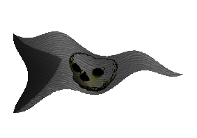
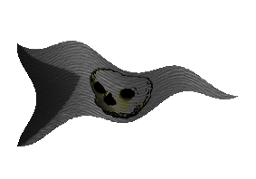

| Übersicht,
Anschläge und Stammtisch (RPG) |
|
Trauer um einen besonderen Mann
|
| Aleya Sophija (RIP) |
Tief verschleiert und in schwarz gekleidet steht Aleya fassungslos am Grab ihres geliebten Mannes.
Aleya hat das Gefühl von totaler Leere und fühlt sich schrecklich alleine.
Leise rinnen ihre Tränen herab und ihr Körper zittert. Es ist ihr als versagen jeden Moment die Beine.
Warum nur ihr Götter ? Warum habt ihr meinen Mann so früh zu Euch geholt.
Während Aleya am Grabe steht durchlebt sie nochmal ihr Kennenlernen, ihre Liebe zu Ramox, der ihr immer treu war und jederzeit in der Not ihr beistand.
Lebe wohl mein über alles geliebter Mann ich werde dich niemals vergessen.
Aleya wirft einen großen Strauß schwarzer Rosen in das tiefe Grab und läuft nach Hause.
Sie muss jetzt alleine sein !
Baronesse Aleya Sophija,
Vorsteherin von Esturia Nova,
Ehefrau des ehrenwerten Ramox,
Hexe von Esturien
Zur 6. Stunde am 2.Erntemond im Jahre 425 |
21.07.06 13:00
 |
|
| Brendan (RIP) |
Im Tode findet so mancher die Erlösung und himmlische Ruh´.
Brendan,
Kardinal im Dienste des einzig wahren Glaubens an Bendur,
Anführer der glorreichen Nation "Bruderschaft der Kaperfahrer"
Zur 6. Stunde am 2.Erntemond im Jahre 425 |
21.07.06 13:01
|
|
| Gregorian von Kazaana (RIP) |
Der Fährmann, so bin ich mir sicher, wird euren Mann sicher über den Styx geleiten...
*legt eine schwarze Rose nieder*
Sir Gregorian von Kazaana,
Anführer der glorreichen Nation "Wächter der Wichtel",
Heerführer der WdW
Zur 7. Stunde am 2.Erntemond im Jahre 425 |
21.07.06 13:08
|
|
| Itto Ogami (RIP) |
Mein Beileid werte Aleya.
*legt eine Rose nieder*
Drake
Zur 9. Stunde am 2.Erntemond im Jahre 425 |
21.07.06 13:42
|
|
| Tupac Amaru (RIP) |
´Sanft zieht eine kleine weiße Wolke über Kanubia und schickt einzelne Tränen zur Erde... Tupac nimmt Ramox´ Leichnam, hüllt ihn in seine beste Rüstung, gibt ihm sein Schwert in die Hand, bettet ihn auf ein Floß, zündet das Floß an und lässt es auf den kanubischen Binnensee treiben...´ Mach es gut mein alter Freund, großer Lehrmeister und ehemaliger Lehnsherr... es sei Dir Dein letzter Wunsch gewährt - die Bestattung auf die alte Art... Mögen sich die Götter Deiner annehmen... Wir treffen uns wieder an der großen Ahnentafel... ´schaut dem brennenden Floß nach und sieht wie die Rauchwolken zu der kleinen Wolke aufsteigen... Wischt sich eine Träne aus dem Auge, murmelt ein Gebet und geht still von dannen...´
Freiherr Tupac Amaru,
Vorsteher von Miracon
Zur 10. Stunde am 2.Erntemond im Jahre 425 |
21.07.06 13:47
|
|
| Kinggidora á Chîroqué (RIP) |
Mein Beileid Aleya, zu deinem Verlust.
Kinggidora á Chîroqué
Zur 17. Stunde am 2.Erntemond im Jahre 425 |
21.07.06 15:29
|
|
Zorra
   |
Mein Beileid zu diesem schlimmen Schlag. Es tut mir sehr leid fuer dich.
Pfalzgräfin Zorra,
Vorsteherin von Feuer des Rubins,
Anführerin der glorreichen Nation "Steppenreiter",
Verlobte des ehrenwerten Mordow
Zur 20. Stunde am 2.Erntemond im Jahre 425 |
21.07.06 16:07
|
|
Cadacan von Tacheless
  |
er ist nun an einem besseren ort
Pfalzgraf Cadacan von Tacheless,
Vorsteher von Burg Hohenstaufen,
Anführer der glorreichen Nation "Schwingen der Sieben",
Krieger des Hains,
Spielverderber
Zur 20. Stunde am 2.Erntemond im Jahre 425 |
21.07.06 16:16
|
|
| Fáin Cortez (RIP) |
So strafen die Götter, jene die Böses im Sinn haben und das Andenken an meinem Vater beschmutzen.
Hart aber gerecht.
MfG.
Baron Fáin Cortez,
Ehemann der reizenden Isabella Cortez,
Hüter des Chaos
Zur 21. Stunde am 2.Erntemond im Jahre 425 |
21.07.06 16:25
|
|
| Fabienn Amilo (RIP) |
Ach Ramox..
nun bin ich lange durch die Wälder gestreift - die richtige Kräuter zu finden, um Dir vielleicht noch etwas Lebenskraft einzuhauchen. Doch dies war mir nicht vergönnt. Und nun stehe ich traurig an der Seite Deiner Frau und bin kraftlos. *senkt ihren Kopf* Warum nur musstest Du so zeitig gehen?
Nur die Götter wissen warum sie Dich schon jetzt zu sich gerufen haben. Mögest Du nun die ersehnte Ruhe finden - mein Lieblingszwerg.
*wirft ein kleines Geschenk, das sie noch übergeben wollte ins Grab*
Baronesse Fabienn Amilo,
Vorsteherin von Amilano
Zur 23. Stunde am 2.Erntemond im Jahre 425 |
21.07.06 16:50
|
|
| Lilith (RIP) |
Keine Strafe.. ein Geschenk!
Baronesse Lilith,
Vorsteherin von Navisko,
Anführerin der glorreichen Nation "Ordo Ignis"
Zur 23. Stunde am 2.Erntemond im Jahre 425 |
21.07.06 16:50
|
|
| Jegor Bor Somar (RIP) |
Mein Beileid Aleya
*sich mit gesenktem Kopf vom Grab entfernt*
Jegor Bor Somar,
Priester im Dienste des einzig wahren Glaubens an Urvan,
Ehemann der reizenden Nynaeve
Zur 23. Stunde am 2.Erntemond im Jahre 425 |
21.07.06 17:01
|
|
| Trivial aka Asgard vdW (RIP) |
Werte Aleya,
so ich euren Mann kaum kannte, aber mit euch schon viele Schlachten gemeinsam focht, biete ich euch in dieser Zeit der großen Trauer jede erdenklich Hilfe und Unterstüzung an.
*am Grab still zu den Lichtsieben betet, das sie Ramox auf seinen letzten Weg begleiten*
Trivial von Kazaana,
Priester im Dienste des einzig wahren Glaubens an Pheron
Zur 24. Stunde am 2.Erntemond im Jahre 425 |
21.07.06 17:04
|
|
| Ibn de Witt (RIP) |
Mein Beileid werte Aleya
Markgraf Ibn de Witt,
Vorsteher von Esturia Draconis
Zur 2. Stunde am 3.Erntemond im Jahre 425 |
21.07.06 17:41
|
|
| Bratislav Gonzales (RIP) |
Ach Ramox, Du hast mir gezeigt, dass Zwerge wirklich gute Freunde sein können.
Auch wenn ihr merkwürdige Stollentrolle seid!
Wenn ich in Not war, standest Du mir bei.
Gute Reise, dicker.
*wirft eine Flasche Rum dem Floss hinterher*
Dr. Bratislav Gonzales,
Kardinal im Dienste des einzig wahren Glaubens an Bendur,
König von Trithales
Zur 19. Stunde am 3.Erntemond im Jahre 425 |
21.07.06 21:31
|
|
| Níniel Fael (RIP) |
Auch ich möchte Euch mein Beileid bekunden, werte Baronesse Aleya Sophija.
Es muss etwas besonderes gewesen sein ~ all die Zeit die ihr Liebe und Vertrauen erfahren durftet.
Haltet diese Erinnerungen fest.
Lady Minuial de Ville,
Ehefrau des ehrenwerten Gwydion de Ville
Zur 23. Stunde am 3.Erntemond im Jahre 425 |
21.07.06 22:27
|
|
| Yakuun (RIP) |
Vermissen werden wir ihn hier auf Kanubia, unseren Zwergenkampfheiler und Stollentroll.
Mein Beileid geht auch an seine Frau und die Freunde mit denen er bis zum Schluss gemeinsam kämpfte und lebte.
Baron Yakuun Serégorn,
Vorsteher von Waldesruh
Zur 7. Stunde am 6.Erntemond im Jahre 425 |
22.07.06 11:40
|
|
| Arithon s`Ffalenn (RIP) |
Ein Freund und vor allem ehrenhafter Mann ist heute von uns gegangen.
Ich hoffe du findest deinen Frieden Ramox, es ist schade das es immer die trifft die es am wenigsten verdient haben...
gez
Sir Arithon s`Ffalenn,
Verlobter der reizenden Dahira la Vargash
Zur 12. Stunde am 7.Erntemond im Jahre 425 |
22.07.06 18:24
|
|
| Orodreth Calaelen (RIP) |
Zu schnell gehen Freunde dahin....
*in tiefer Trauer eine Rose auf den Fluß wirft*
Freiherr Orodreth Calaelen,
Vorsteher von Burg Rüpelfels
Zur 9. Stunde am 11.Erntemond im Jahre 425 |
23.07.06 16:08
|
|
| Cwlvyn ab Dhwron (RIP) |
adios amigo
Sir Amorous Meara,
Anführer der glorreichen Nation "Glorias Cognomen Ingham",
König der Plünderer
Zur 10. Stunde am 11.Erntemond im Jahre 425 |
23.07.06 16:23
|
|
| Mordow (RIP) |
Er war ein Freund, ein wirklich besonderer Mann und ein würdiger Schwiegersohn.
Leb wohl, mein Freund
Graf Mordow,
Anführer der glorreichen Nation "Ritter der Tafelrunde",
Verlobter der reizenden Zorra
Zur 8. Stunde am 17.Erntemond im Jahre 425 |
25.07.06 1:41
|
|
Norina á Chîroqué
  |
*steht mit Tränen am Grabe dieses besonderes Mannes*
Ich kannte dich noch nicht sehr lange und doch warst du in den vergangenen Zeiten wie ein Vater für mich. Ruhe in Frieden! Ich werde dich nie vergessen und auch stets Deiner geliebten Frau zur Seite stehen. Das Verspreche ich Dir.
*legt eine weiße Rose nieder und sucht die Hand von Aleya*
Leb wohl!!
Norina
Zur 11. Stunde am 20.Erntemond im Jahre 425 |
25.07.06 19:09
|
|
Otin ni Shim
  |
Der Tod ist nicht für die Verstorbenen schlimm, sondern nur für die Hinterbliebenen
Mein Beileid Aleya
*den schrecklichen Schmerz den Aleya empfinden muss nur zu gut kennt*
Otin ni Shim,
Netre ni î Cirolur
Zur 1. Stunde am 21.Erntemond im Jahre 425 |
25.07.06 22:38
|
|
Übersicht,
Anschläge und Stammtisch (RPG)
|